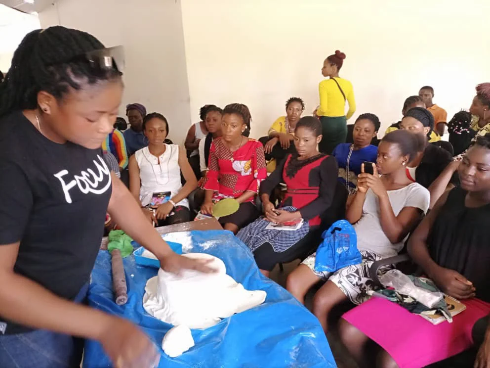
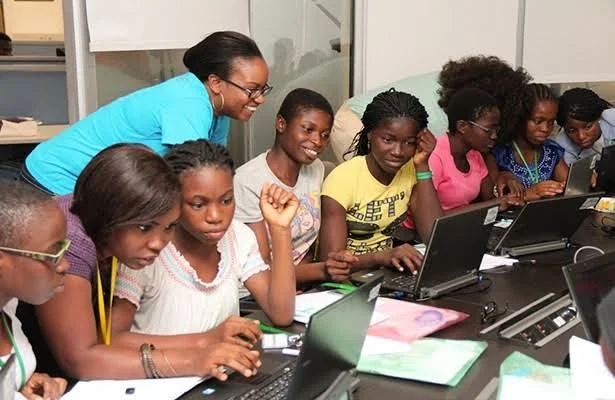
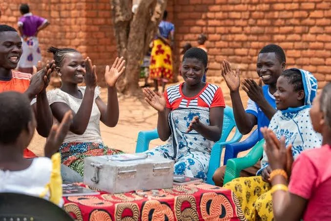

Identity and direction
Help participants clarify their interests, strengths and direction.
Inspire Generation NEXT and NEXT Community are youth-facing community pathways associated with YIELD Global Impact. They connect young people with leadership development, peer networks, purposeful experiences and opportunities to contribute.
Students, young professionals, campus communities, emerging creators and young people exploring their next step in leadership and personal growth.
A clear programme proposition helps participants understand the purpose, participation path and kind of contribution that is being invited.
Help participants clarify their interests, strengths and direction.
Build constructive peer connections and shared learning.
Create pathways to participate in events, service and community initiatives.
A glimpse of young people participating in practical learning, digital skills development and community experiences. The gallery celebrates the energy, curiosity and potential of the next generation.



The pathway keeps expectations clear and helps the programme team organise participants, partners and delivery activity.
Youth Initiative Empowerment and Leadership Development
YIELD InitiativeLeadership · Fellowship · Activation
YIELD InitiativeLearning · Capability · Social Impact
YIELD InitiativeLifestyle · Community · Fitness · Food · Travel
Activities and participation details vary by campus, community and programme cycle.
Share your area of interest, target community or proposed collaboration. Programme specifics and participation requirements are confirmed with the relevant team.
Let us know whether you are a young leader, campus representative, mentor, volunteer or organisation interested in the NEXT community.
Your enquiry is labelled for this specific venture and saved with the details you provide. The team can follow up by email or phone; submitting this form is a request, not a confirmed booking or service approval.
Prefer a direct conversation? Email info@goldbuilders.co or call +234 8022848749.